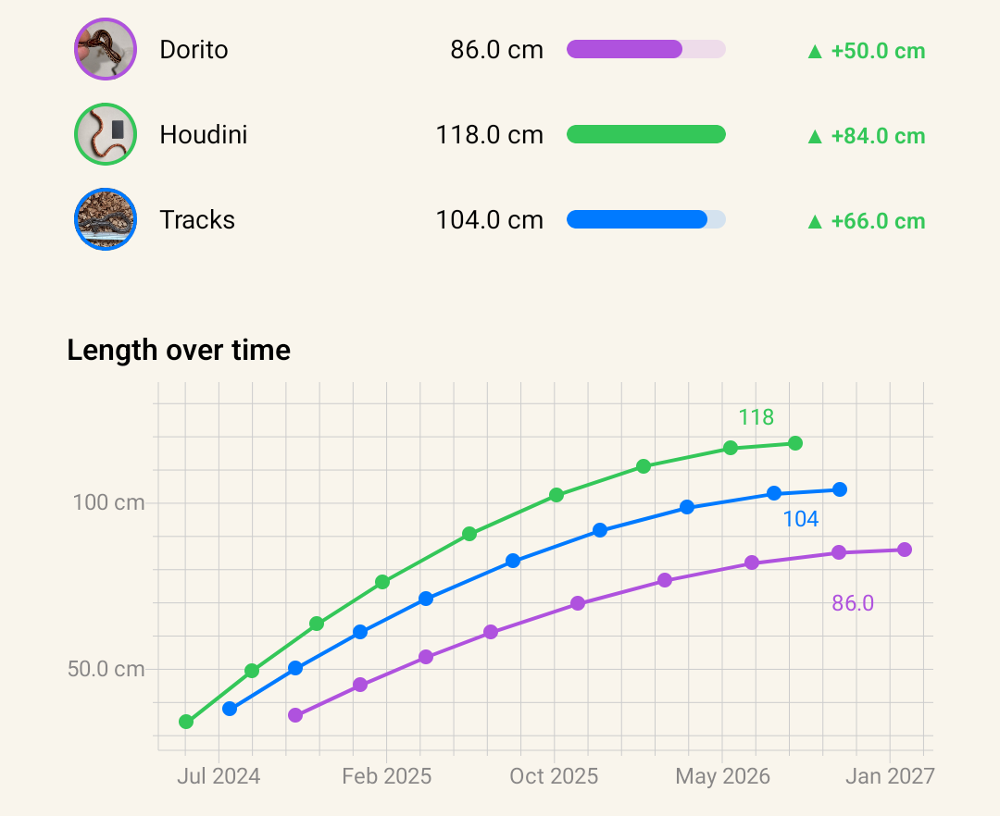

Take a photo of your snake next to a reference object like a ruler or a card.
2
Set the Reference
Mark two points on the reference object and enter its known size.
3
Measure the Snake
Trace points along the body — or let AI auto-detect it. The app calculates the real length instantly.
Two years of her, on one line
Every measurement is saved to the animal’s profile. Already have photos from last year? Add them — each measurement is dated from the photo itself, so the curve fills in backwards.

Features
Precise Measurements
Pixel-accurate calculations based on reference object scale.
AI Auto-Detect
Let AI trace your snake and the reference for you — no careful tapping.
Growth Charts
Track length and growth rate over time with clear charts.
Multiple Profiles
Keep a separate profile and history for every snake you own.
Species & Age
Pick the species from a built-in list and add a birth date — the growth chart can then run by age instead of by date.
Measurement Reminders
A nudge every two weeks or every month — several snakes due the same day arrive in one notification.
Shareable Cards
Post a single measurement, growth from two photos, or several snakes compared at the same age.
Sync & Offline
Works offline; sign in to back up and sync across your devices.
Multiple Units
Centimeters, millimeters, meters, inches, or feet — your choice.
Frequently Asked Questions
Upload a photo of your snake with a reference object (ruler, card, etc.). Mark the reference, enter its size, then trace along your snake's body. The app uses the reference scale to calculate the real length.
Yes. Pick any photo from your gallery — the measurement is dated from the photo itself, not from today. Add a few old pictures and the growth chart fills in backwards, so you’re not starting from zero.
Any object with a known size: a ruler, a card (85.6 mm), coin, or anything you can measure. Place it next to your snake in the photo.
Accuracy depends on the photo. Shoot straight down with the whole snake in frame and the reference object flat beside it, and avoid wide-angle distortion. In good conditions the result lands within about 5% of the real length — measured carefully, usually 1–2%.
Yes. Set a reminder per snake — every two weeks, every month or less often. Several snakes due on the same day arrive in one notification, and reminders never fire more than once a day.
Yes. The app builds the image for you: one measurement, growth from two photos of the same snake, or several snakes compared at the same age. You see the card before you send it.
Yes! The free version includes measuring, growth charts, CSV export, and cloud sync. Premium unlocks unlimited saved measurements, multiple snake profiles, and AI auto-detect.